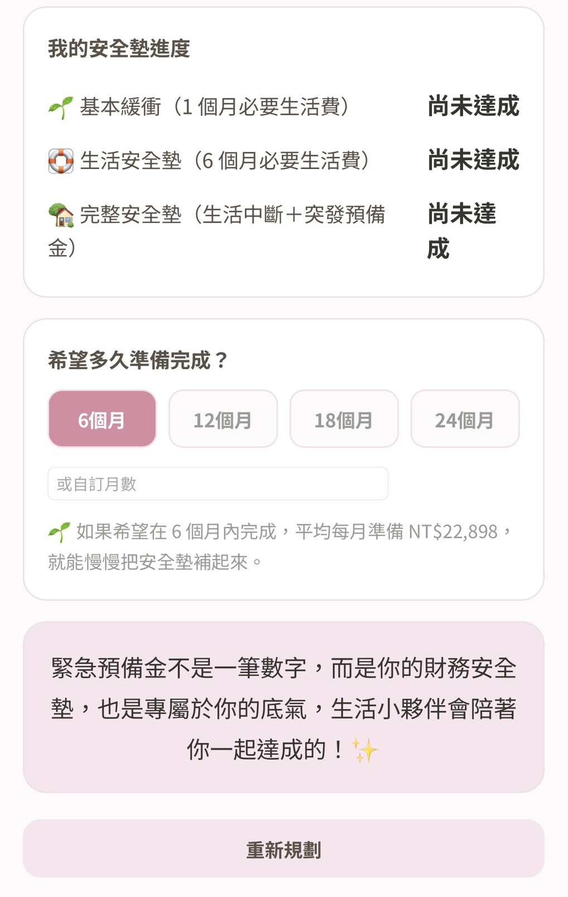
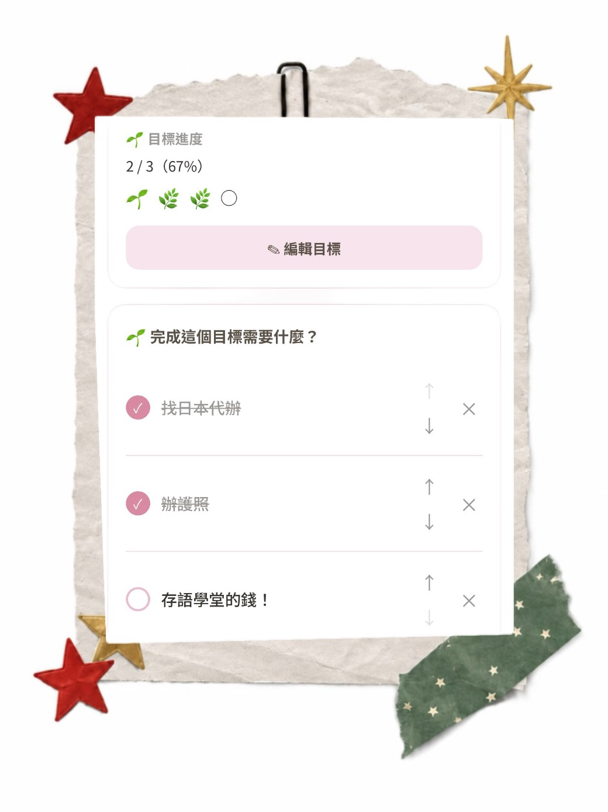
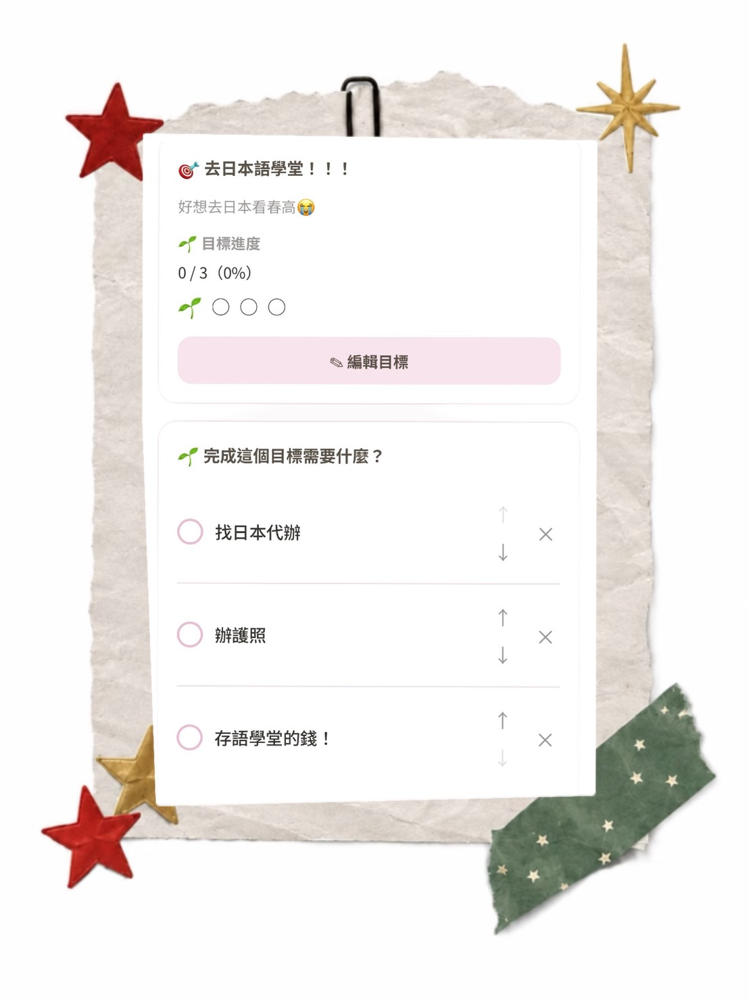

如果把這些原本散落的生活，放進生活小夥伴裡，你會在這裡看見什麼？
今天要做什麼？最近過得怎麼樣？
打卡小遊戲、待辦、心情、日記與記帳紀錄，都會慢慢留在同一個月曆裡。
「打開首頁，就能先看看今天的自己。」
想到的事情先放進來。可以按照日期查看，也能搜尋日期與內容。
「不用再擔心哪一項事情沒完成～」
✨ 生活小夥伴也能改成專屬於你的名字呦！


一起來建造你的專屬農場吧！
生活小夥伴的農場打卡小遊戲，不是上班時那種討人厭的打卡，而是有打卡的日子，你的小農場會慢慢成長；偶爾沒有做到，也不會讓以前的累積全部消失。反而可能會有殭屍等其他訪客偷偷出現！農場還能隨意更改成你喜歡的名字呦～
「有做到的日子，會留下成長。」
「沒做到的日子，也會留下不同的故事。」
「真正能陪你很久的工具，不需要你每天都完美。」


生活小夥伴是你的生活儀式感！✨
錢剩多少？花去哪裡？現在的財務狀況怎麼樣？
「我的資產」不是只有記帳，而是讓你可以從日常金流，一路看到自己的整體財務狀況。
📲使用簡單無壓力
收入、支出、金流紀錄與分類，都可以慢慢整理清楚。
「你不是突然變得很會理財，而是終於開始看得懂自己的金流去向。」
針對每個月的收入與生活需求，安排不同用途的預算，讓你知道這個月的錢要怎麼分配。
房租、保費、訂閱這類每期都固定的支出，可以預先設定，不用每個月重新輸入。
整理自己目前持有的不同資產，慢慢看懂自己的資產累積。
不只看見「還有多少債」，也能看見「自己已經還了多少」。
整理與追蹤自己的緊急預備金準備狀況，小夥伴也會依照你的情況幫你計算出適合你的預備金額。
以下圖片僅為範例圖



👉 左右滑動查看更多畫面
想完成的目標，不再只停留於一個想法而已，小夥伴將陪你一起行動！
把想完成的事情留下來，再一步一步拆成真正可以開始的小行動。
例如想去日本生活一個月：查語言學校 → 算需要多少錢 → 每月存一筆旅費 → 辦護照 → 看機票 → 找住宿。
「不用現在就知道整條路怎麼走。」
「只要先知道下一步，就可以開始了！」


日子會過去，但那時候的你也值得被記得。
我們很容易記得發生過什麼，
卻不一定記得——
那時候的自己，是什麼心情。
今天很開心、有點累、受了委屈，
或是終於完成一件期待很久的事。
有時候我們忙著處理每天發生的事情，
卻很少停下來看看，自己最近到底過得好不好。
不一定要寫成一篇完整的日記。
一句話、幾個字，就足以替今天的自己留下一點痕跡🐾

- 你今天要做的事。
- 你正在努力的目標。
- 你賺進來、花出去與正在累積的錢。
- 還有每一天，正在發生的生活。
✨小夥伴都將和你一起記錄你的每一刻。✨